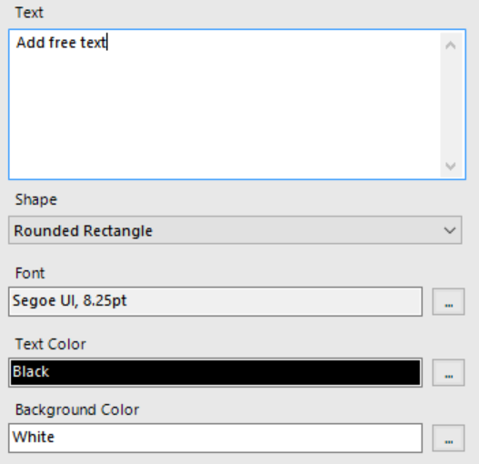
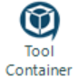
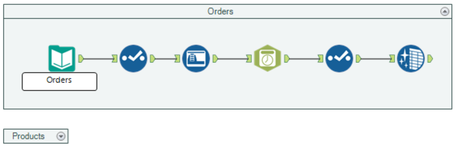
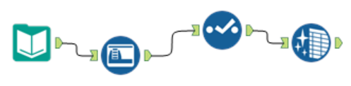

.png)
Before we move on, we are going to do some housekeeping in our workflow. As you start to build bigger and more complex workflows then it becomes important to make sure your workflows are tidy and organised so that you and others can make changes to workflows without having to spend too long working out what each tool is connected to and why.
As discussed previously and as you will have no doubt noticed, Alteryx by default adds annotations to tools whenever you drag them on to the canvas, displaying details about what function the tool is performing. This can be useful in some respects but often creates clutter in the workflow especially when there are a lot of tools performing multiple functions.
To hide, simply click on a bank part of the canvas to display the workflow configuration window. Under Canvas, select “Hide” from the dropdown menu next to Annotations and all the tool annotations will disappear.
Although Alteryx default annotations may make workflows difficult to read, we will often still want to add some sort of comment to parts of our workflows. In particular we may want to provide notes about what the workflow is doing or to detail the purpose of a particular part without the need to click in and look at the configurations. We can do this with the Comment tool which can be placed anywhere on the canvas.

Free text can be added to label a tool or make notes. You can also change the background colour, text colour and font of the comments as you see fit.
Let’s try this now by adding a label to each of our input tools and also some notes on what the purpose of our workflow is.
Alteryx also comes with ability to place groups of tools inside collapsible containers. This allows us to group several tools that we combine to perform a specific task such as cleaning an input and make them appear as one block that can be collapsed to save space and to easily make changes to certain actions performed in our workflows.
To add tools to a container, drag the container tool onto the canvas from the Documentation tab on the tool pallet and then the tools you would like to group into the container.
Our sales_report workflow currently has two streams, one that imports the orders csv file and cleans the data and one that does the same for the products csv file. Let’s put each one of these streams in it’s own container and change the caption to match the input.
The arrow in the top right hand corner of the container can be used to collapse or un-collapse a container as you see fit. This becomes particularly useful when we have large workflows with dozens of tools allowing us to shrink blocks of tools until we need to edit them, keeping our workflows manageable to work with.
Finally, we have a trick for everyone who appreciates straight lines and angles. As you will have noticed, the flow of data within Alteryx worklows moves from left to right in lines but sometimes as we add tools we don’t get these exactly in line with each other.
Luckily there is a quick shortcut that will bring everything back into harmony. Select all tools that you would like to align and press ctrl/shift/- to bring everything back in line.